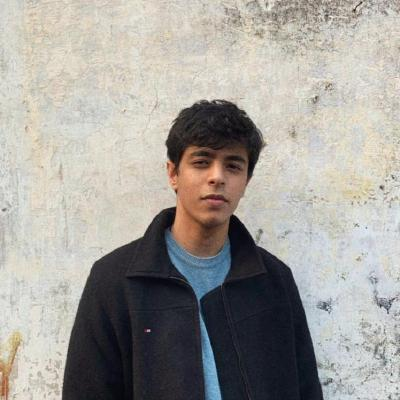
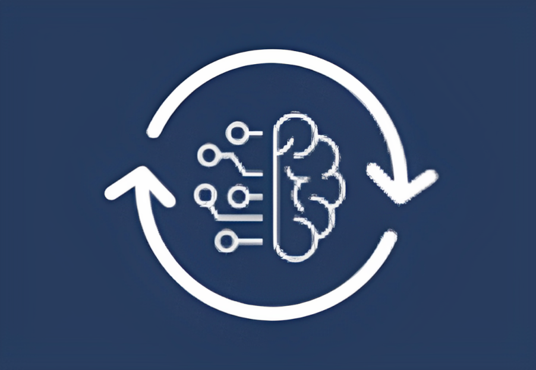

Jaisidh Singh
Deep Learning Researcher

I am an undergraduate researcher at IIT Jodhpur. Currently a research intern at Bosch Research Bangalore and Trusted AI Lab @ IIT Jodhpur, I aim to leverage a multidisciplinary approach to research in deep learning. My experience and interests lie in computer vision, interpretability, foundation models, and NLP. Recent advances in reinforcement learning have also captured my interest. I am looking to work in these domains and to build fruitful, long-lasting collaborations, producing high-quality research work and publications.
Publications

Media
|
 |
Concepts of Reinforcement LearningA presentation of my notes and tinkering with the DeepMind x UCL RL course. I hope to aid the learning of others stepping into the wonderful field of RL. [Blog] |
Projects

|
Multimodal Diffusion Models for InpaintingA modular, plug-and-play framework to organize my learning and experiments with diffusion models. Includes flexible training and inference paradigms for DDPMs, LDMs on datasets like Stanford Cars, LSUN Dining Rooms, along with Stable Diffusion inference. Grounded inpainting is also possible with built in Stable Diffusion and GLIGEN, supporting all of GLIGEN's tasks. Currently working on a custom framework for realistic editing and inpainting of driving scenes. [Code] |

|
UV-Summ: Frame Scoring Using UNet-like Transformers for Deep Video SummarizationMy venture into video-based computer vision, starting with an architecture inspired by UNet for scoring CLIP frame features to extract key-frames. Includes a zero-shot text summarizer using CLIP embeddings of the extracted key-frames. Our results outperformed recent approaches on the TvSumm datasets, and this was presented as the course project for Deep Learning 2023 @ IIT Jodhpur |

|
Beyond Token Limits: Inference-time Optimization for Large Document SummarizationA high-utility project for the summarization of large articles, in a purely inference-based, plug-and-play manner. Utilizing hierarchical sentence clustering for extractive summarization, this was presented as the DL-Ops project for DL 2023 @ IIT Jodhpur |

|
LowResFormer: A Transformer for Low Resolution Fine Grained Image ClassificationA vision transformer architecture developed as my first self-research endeavour. Utilized multimodal inputs of images along with their attribute information, to classify images. Outperformed previous approached on the AwA2 dataset, in all resolutions. [Code] |

|
Deep RL: Agents on Gym and Custom EnvironmentsA project of self-implemented RL algorithms on OpenAI's Gym to gain an understanding of this field. Implemented the DQN and Permutation Invariant Senory Transformer papers, and used this learning to apply DQN for the Course Project for Advanced Artificial Intelligence 2023 @ IIT Jodhpur. |
Extras
I am an avid reader, and enjoy fiction and non-fiction, especially mythological and philosophical works. I am also an experienced guitarist and vocalist. I have performed at large-scale events, including IGNUS and Inter-IIT Cultural Meet and as a Core Member and Mentor of Sangam Music Society @ IIT Jodhpur I have guided 3 batches of musicians of the society. I have contributed to published music as a composer and lyricist with Rajvir Singh Gill, and am working on putting some of my original works on Spotify. As a person, I am drawn to collaborations and leadership roles, and positions which allow me to help people. As a Student Guide @ SWC IITJ (2021), I assumed continuous personal and professional mentorship of 10 students, and handled a junior batch of 500 students with a team of 45. My varied range of interests and skills also made me a Core Member (2021) of Quiz Society, Literature Society, and DevlUp Labs @ IITJ.